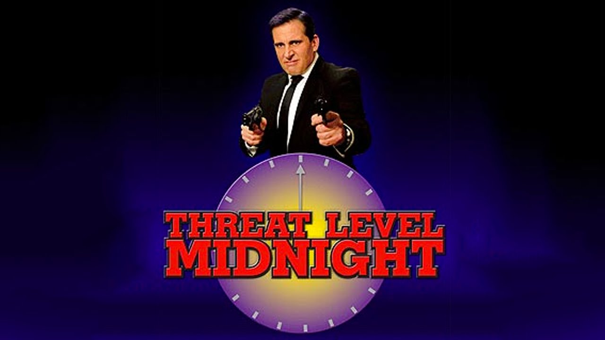
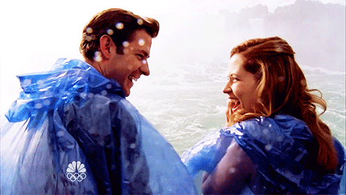
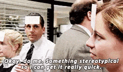
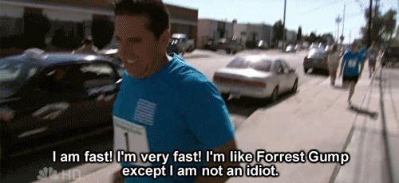
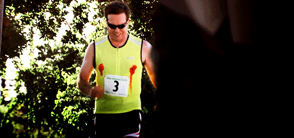

My favorite Office Episodes!
Below you will find a list of great Office episode. Although I must add that every episode is worth watching for some solid laughs.
-
THREAT LEVEL MIDNIGHT: Season 7, Episode 17
Michael, like the funny guy he is, has directed a spy movie featuring him and in this episode you get to experience his movie. It is simply a masterpiece...
-
NIAGARA: Season 6, Episodes 4 and 5
Jim and Pam. Jam. Pim. The best couple on the show that Office fans have been supporting from the beginning of the show. In this episode, you get to see the two lovebirds finally tie the knot. What else could you ask for in life?
-
Diversity Day: Season 1, Episode 2


Michael puts his own spin on diversity activities. All I can say is, I don't approve Michael but nice try. We all have failures.
-
Fun Run:Season 4, Episodes 1 and 2
 A lot happens in this episode. Meredith gets hit with a car. Meredith has rabies. Michael hosts a fun run for a disease that has been cured. Andy experiences nipple chafing. Michael collapses. Basically it is a must watch episode.